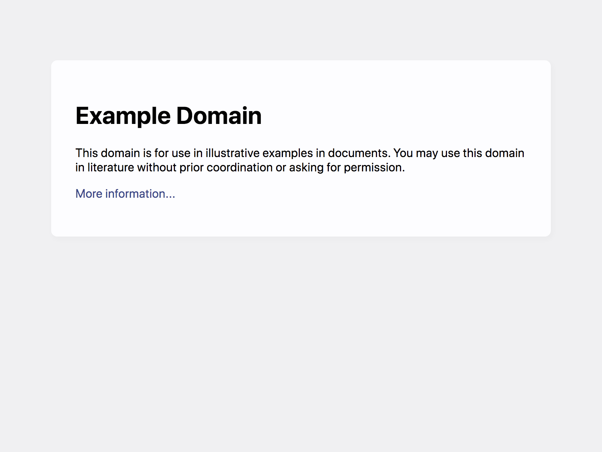
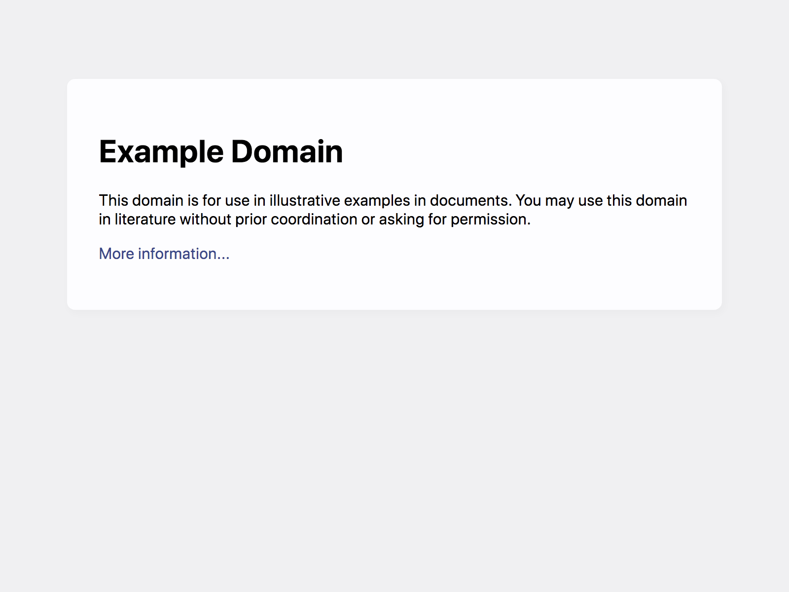

Started
Sep 12, 2023 08:24:46 PM
Ended
Sep 12, 2023 08:25:01 PM
Features Passed
0
Features Failed
1
Features
Scenarios
Steps
Timeline
Tags
| Name | Passed | Failed | Skipped | Others | Passed % |
|---|---|---|---|---|---|
| @tag | 0 | 25 | 0 | 0 | 0% |
System/Environment
| Name | Value |
|---|---|
| AppName | DS-ALGO_PROJECT |
| user | Cool Cukes Team |
| build | 1.1 |
| os | MAC |
-
Authenticate and verify the login feature
8:24:47 PM / 00:00:14:226 Fail
Authenticate and verify the login feature
09.12.2023 8:24:47 PM 09.12.2023 8:25:01 PM 00:00:14:226 · #test-id=1FailVerify admin is able to land on homepageGiven The admin is in Home pageWhen The admin clicks on the Login linkcom.lmsproject.apphooks.Hooks.addScreenShot(io.cucumber.java.Scenario)Verify_admin_is_able_to_land_on_homepage Then The admin should landed on LMS Login Page "LMS Login Page"Step skippedFailVerifies for broken linkGiven The admin is in Home pageWhen The admin clicks on the Login linkcom.lmsproject.apphooks.Hooks.addScreenShot(io.cucumber.java.Scenario)Verifies_for_broken_link
Then The admin should landed on LMS Login Page "LMS Login Page"Step skippedFailVerifies for broken linkGiven The admin is in Home pageWhen The admin clicks on the Login linkcom.lmsproject.apphooks.Hooks.addScreenShot(io.cucumber.java.Scenario)Verifies_for_broken_link Then The admin gets the errorMessage "URL is broken link." when the response is >=400Step skippedFailVerifies the header of the login pageGiven The admin is in Home pageWhen The admin clicks on the Login linkcom.lmsproject.apphooks.Hooks.addScreenShot(io.cucumber.java.Scenario)Verifies_the_header_of_the_login_page
Then The admin gets the errorMessage "URL is broken link." when the response is >=400Step skippedFailVerifies the header of the login pageGiven The admin is in Home pageWhen The admin clicks on the Login linkcom.lmsproject.apphooks.Hooks.addScreenShot(io.cucumber.java.Scenario)Verifies_the_header_of_the_login_page Then The admin gets the Message "Please login to LMS Application"Step skippedFailVerifies the correct spelling of the fields in login pageGiven The admin is in Home pageWhen The admin clicks on the Login linkcom.lmsproject.apphooks.Hooks.addScreenShot(io.cucumber.java.Scenario)Verifies_the_correct_spelling_of_the_fields_in_login_page
Then The admin gets the Message "Please login to LMS Application"Step skippedFailVerifies the correct spelling of the fields in login pageGiven The admin is in Home pageWhen The admin clicks on the Login linkcom.lmsproject.apphooks.Hooks.addScreenShot(io.cucumber.java.Scenario)Verifies_the_correct_spelling_of_the_fields_in_login_page Then The admin should see the correct spellings in all fieldsStep skippedFailVerifies the text field is presentGiven The admin is in Home pageWhen The admin clicks on the Login linkcom.lmsproject.apphooks.Hooks.addScreenShot(io.cucumber.java.Scenario)Verifies_the_text_field_is_present
Then The admin should see the correct spellings in all fieldsStep skippedFailVerifies the text field is presentGiven The admin is in Home pageWhen The admin clicks on the Login linkcom.lmsproject.apphooks.Hooks.addScreenShot(io.cucumber.java.Scenario)Verifies_the_text_field_is_present Then The admin should see the two text fieldsStep skippedFailVerifies text on the first text fieldGiven The admin is in Home pageWhen The admin clicks on the Login linkcom.lmsproject.apphooks.Hooks.addScreenShot(io.cucumber.java.Scenario)Verifies_text_on_the_first_text_field
Then The admin should see the two text fieldsStep skippedFailVerifies text on the first text fieldGiven The admin is in Home pageWhen The admin clicks on the Login linkcom.lmsproject.apphooks.Hooks.addScreenShot(io.cucumber.java.Scenario)Verifies_text_on_the_first_text_field Then The admin should see "User" in the first text fieldStep skippedFailVerifies symbol next to user textGiven The admin is in Home pageWhen The admin clicks on the Login linkcom.lmsproject.apphooks.Hooks.addScreenShot(io.cucumber.java.Scenario)Verifies_symbol_next_to_user_text
Then The admin should see "User" in the first text fieldStep skippedFailVerifies symbol next to user textGiven The admin is in Home pageWhen The admin clicks on the Login linkcom.lmsproject.apphooks.Hooks.addScreenShot(io.cucumber.java.Scenario)Verifies_symbol_next_to_user_text Then The admin should see "*" symbol next to user textStep skippedFailVerifies text on the second text fieldGiven The admin is in Home pageWhen The admin clicks on the Login linkcom.lmsproject.apphooks.Hooks.addScreenShot(io.cucumber.java.Scenario)Verifies_text_on_the_second_text_fieldThen The admin should see "password" in the second text fieldStep skippedFailVerifies symbol next to password textGiven The admin is in Home pageWhen The admin clicks on the Login linkcom.lmsproject.apphooks.Hooks.addScreenShot(io.cucumber.java.Scenario)Verifies_symbol_next_to_password_text
Then The admin should see "*" symbol next to user textStep skippedFailVerifies text on the second text fieldGiven The admin is in Home pageWhen The admin clicks on the Login linkcom.lmsproject.apphooks.Hooks.addScreenShot(io.cucumber.java.Scenario)Verifies_text_on_the_second_text_fieldThen The admin should see "password" in the second text fieldStep skippedFailVerifies symbol next to password textGiven The admin is in Home pageWhen The admin clicks on the Login linkcom.lmsproject.apphooks.Hooks.addScreenShot(io.cucumber.java.Scenario)Verifies_symbol_next_to_password_text Then The admin should see "*" symbol next to password textStep skippedFailVerifies the alignment input field for the loginGiven The admin is in Home pageWhen The admin clicks on the Login linkcom.lmsproject.apphooks.Hooks.addScreenShot(io.cucumber.java.Scenario)Verifies_the_alignment_input_field_for_the_login
Then The admin should see "*" symbol next to password textStep skippedFailVerifies the alignment input field for the loginGiven The admin is in Home pageWhen The admin clicks on the Login linkcom.lmsproject.apphooks.Hooks.addScreenShot(io.cucumber.java.Scenario)Verifies_the_alignment_input_field_for_the_login Then The admin should see the input field on the center of the pageStep skippedFailVerifies the login is presentGiven The admin is in Home pageWhen The admin clicks on the Login linkcom.lmsproject.apphooks.Hooks.addScreenShot(io.cucumber.java.Scenario)Verifies_the_login_is_present
Then The admin should see the input field on the center of the pageStep skippedFailVerifies the login is presentGiven The admin is in Home pageWhen The admin clicks on the Login linkcom.lmsproject.apphooks.Hooks.addScreenShot(io.cucumber.java.Scenario)Verifies_the_login_is_present Then The admin should see login buttonStep skippedFailVerifies the alignment of the login buttonGiven The admin is in Home pageWhen The admin clicks on the Login linkcom.lmsproject.apphooks.Hooks.addScreenShot(io.cucumber.java.Scenario)Verifies_the_alignment_of_the_login_button
Then The admin should see login buttonStep skippedFailVerifies the alignment of the login buttonGiven The admin is in Home pageWhen The admin clicks on the Login linkcom.lmsproject.apphooks.Hooks.addScreenShot(io.cucumber.java.Scenario)Verifies_the_alignment_of_the_login_button Then The admin should see login button on the center of the pageStep skippedFailVerifies forgot username or password linkGiven The admin is in Home pageWhen The admin clicks on the Login linkcom.lmsproject.apphooks.Hooks.addScreenShot(io.cucumber.java.Scenario)Verifies_forgot_username_or_password_link
Then The admin should see login button on the center of the pageStep skippedFailVerifies forgot username or password linkGiven The admin is in Home pageWhen The admin clicks on the Login linkcom.lmsproject.apphooks.Hooks.addScreenShot(io.cucumber.java.Scenario)Verifies_forgot_username_or_password_link Then The admin should see forget username or password linkStep skippedFailVerifies reset password linkGiven The admin is in Home pageWhen The admin clicks on the Login linkcom.lmsproject.apphooks.Hooks.addScreenShot(io.cucumber.java.Scenario)Verifies_reset_password_link
Then The admin should see forget username or password linkStep skippedFailVerifies reset password linkGiven The admin is in Home pageWhen The admin clicks on the Login linkcom.lmsproject.apphooks.Hooks.addScreenShot(io.cucumber.java.Scenario)Verifies_reset_password_link Then The admin should see reset password linkStep skippedFailVerifies input decriptive test in user fieldGiven The admin is in Home pageWhen The admin clicks on the Login linkcom.lmsproject.apphooks.Hooks.addScreenShot(io.cucumber.java.Scenario)Verifies_input_decriptive_test_in_user_field
Then The admin should see reset password linkStep skippedFailVerifies input decriptive test in user fieldGiven The admin is in Home pageWhen The admin clicks on the Login linkcom.lmsproject.apphooks.Hooks.addScreenShot(io.cucumber.java.Scenario)Verifies_input_decriptive_test_in_user_field Then The admin should see user in gray "#808080" scolorStep skippedFailVerifies input decriptive test in password fieldGiven The admin is in Home pageWhen The admin clicks on the Login linkcom.lmsproject.apphooks.Hooks.addScreenShot(io.cucumber.java.Scenario)Verifies_input_decriptive_test_in_password_field
Then The admin should see user in gray "#808080" scolorStep skippedFailVerifies input decriptive test in password fieldGiven The admin is in Home pageWhen The admin clicks on the Login linkcom.lmsproject.apphooks.Hooks.addScreenShot(io.cucumber.java.Scenario)Verifies_input_decriptive_test_in_password_field Then The admin should see password in gray "#808080" colorStep skippedFailValidate login with valid credentialsGiven The admin is in login pageWhen The admin enter valid credentials and clicks login button
Then The admin should see password in gray "#808080" colorStep skippedFailValidate login with valid credentialsGiven The admin is in login pageWhen The admin enter valid credentials and clicks login buttonUIAchievers Test@1234 com.lmsproject.apphooks.Hooks.addScreenShot(io.cucumber.java.Scenario)Validate_login_with_valid_credentials Then The admin should land on dashboard page with the message "Welcome, Admin! Logged in successfully"Step skippedFailValidate login with invalid credentialsFailValidate login with invalid credentialsGiven The admin is in login pageWhen The admin enters "", "Test@1234" and clicks the login buttoncom.lmsproject.apphooks.Hooks.addScreenShot(io.cucumber.java.Scenario)Validate_login_with_invalid_credentials
Then The admin should land on dashboard page with the message "Welcome, Admin! Logged in successfully"Step skippedFailValidate login with invalid credentialsFailValidate login with invalid credentialsGiven The admin is in login pageWhen The admin enters "", "Test@1234" and clicks the login buttoncom.lmsproject.apphooks.Hooks.addScreenShot(io.cucumber.java.Scenario)Validate_login_with_invalid_credentials Then the admin should see the error message indicating "Please enter valid username"Step skippedFailValidate login with invalid credentialsGiven The admin is in login pageWhen The admin enters "UIAchievers", "" and clicks the login buttoncom.lmsproject.apphooks.Hooks.addScreenShot(io.cucumber.java.Scenario)Validate_login_with_invalid_credentials
Then the admin should see the error message indicating "Please enter valid username"Step skippedFailValidate login with invalid credentialsGiven The admin is in login pageWhen The admin enters "UIAchievers", "" and clicks the login buttoncom.lmsproject.apphooks.Hooks.addScreenShot(io.cucumber.java.Scenario)Validate_login_with_invalid_credentials Then the admin should see the error message indicating "Please enter valid password"Step skippedFailValidate login with invalid credentialsGiven The admin is in login pageWhen The admin enters "00000000000", "Test@1234" and clicks the login buttoncom.lmsproject.apphooks.Hooks.addScreenShot(io.cucumber.java.Scenario)Validate_login_with_invalid_credentials
Then the admin should see the error message indicating "Please enter valid password"Step skippedFailValidate login with invalid credentialsGiven The admin is in login pageWhen The admin enters "00000000000", "Test@1234" and clicks the login buttoncom.lmsproject.apphooks.Hooks.addScreenShot(io.cucumber.java.Scenario)Validate_login_with_invalid_credentials Then the admin should see the error message indicating "Please enter valid username"Step skippedFailValidate login with invalid credentialsGiven The admin is in login pageWhen The admin enters "UIAchievers", "00000000000" and clicks the login buttoncom.lmsproject.apphooks.Hooks.addScreenShot(io.cucumber.java.Scenario)Validate_login_with_invalid_credentials
Then the admin should see the error message indicating "Please enter valid username"Step skippedFailValidate login with invalid credentialsGiven The admin is in login pageWhen The admin enters "UIAchievers", "00000000000" and clicks the login buttoncom.lmsproject.apphooks.Hooks.addScreenShot(io.cucumber.java.Scenario)Validate_login_with_invalid_credentials Then the admin should see the error message indicating "Please enter valid password"Step skippedFailValidate login with invalid credentialsGiven The admin is in login pageWhen The admin enters "*&^$$$$$$$$", "Test@1234" and clicks the login buttoncom.lmsproject.apphooks.Hooks.addScreenShot(io.cucumber.java.Scenario)Validate_login_with_invalid_credentials
Then the admin should see the error message indicating "Please enter valid password"Step skippedFailValidate login with invalid credentialsGiven The admin is in login pageWhen The admin enters "*&^$$$$$$$$", "Test@1234" and clicks the login buttoncom.lmsproject.apphooks.Hooks.addScreenShot(io.cucumber.java.Scenario)Validate_login_with_invalid_credentials Then the admin should see the error message indicating "Please enter valid username"Step skippedFailValidate login with invalid credentialsGiven The admin is in login pageWhen The admin enters "", "" and clicks the login buttoncom.lmsproject.apphooks.Hooks.addScreenShot(io.cucumber.java.Scenario)Validate_login_with_invalid_credentials
Then the admin should see the error message indicating "Please enter valid username"Step skippedFailValidate login with invalid credentialsGiven The admin is in login pageWhen The admin enters "", "" and clicks the login buttoncom.lmsproject.apphooks.Hooks.addScreenShot(io.cucumber.java.Scenario)Validate_login_with_invalid_credentials Then the admin should see the error message indicating "Please enter valid username and password"Step skippedFailVerify login button action through keyboardGiven The admin is in Home pageWhen The admin enter valid credentials and clicks login button through keyboard
Then the admin should see the error message indicating "Please enter valid username and password"Step skippedFailVerify login button action through keyboardGiven The admin is in Home pageWhen The admin enter valid credentials and clicks login button through keyboardUIAchievers Test@1234 com.lmsproject.apphooks.Hooks.addScreenShot(io.cucumber.java.Scenario)Verify_login_button_action_through_keyboard Then The admin should land on dashboard page with the message "Welcome, Admin! Logged in successfully"Step skippedFailVerify login button action through mouseGiven The admin is in Home pageWhen The admin enter valid credentials and clicks login button through mouse
Then The admin should land on dashboard page with the message "Welcome, Admin! Logged in successfully"Step skippedFailVerify login button action through mouseGiven The admin is in Home pageWhen The admin enter valid credentials and clicks login button through mouseUIAchievers Test@1234 com.lmsproject.apphooks.Hooks.addScreenShot(io.cucumber.java.Scenario)Verify_login_button_action_through_mouse Then The admin should land on dashboard page with the message "Welcome, Admin! Logged in successfully"Step skipped
Then The admin should land on dashboard page with the message "Welcome, Admin! Logged in successfully"Step skipped
-
@tag
25 tests
@tag
25 failedStatus Timestamp TestName Fail 20:24:47 PM Verify admin is able to land on homepage Authenticate and verify the login feature.Verify admin is able to land on homepageFail 20:24:52 PM Verifies for broken link Authenticate and verify the login feature.Verifies for broken linkFail 20:24:53 PM Verifies the header of the login page Authenticate and verify the login feature.Verifies the header of the login pageFail 20:24:53 PM Verifies the correct spelling of the fields in login page Authenticate and verify the login feature.Verifies the correct spelling of the fields in login pageFail 20:24:53 PM Verifies the text field is present Authenticate and verify the login feature.Verifies the text field is presentFail 20:24:54 PM Verifies text on the first text field Authenticate and verify the login feature.Verifies text on the first text fieldFail 20:24:54 PM Verifies symbol next to user text Authenticate and verify the login feature.Verifies symbol next to user textFail 20:24:55 PM Verifies text on the second text field Authenticate and verify the login feature.Verifies text on the second text fieldFail 20:24:55 PM Verifies symbol next to password text Authenticate and verify the login feature.Verifies symbol next to password textFail 20:24:55 PM Verifies the alignment input field for the login Authenticate and verify the login feature.Verifies the alignment input field for the loginFail 20:24:56 PM Verifies the login is present Authenticate and verify the login feature.Verifies the login is presentFail 20:24:56 PM Verifies the alignment of the login button Authenticate and verify the login feature.Verifies the alignment of the login buttonFail 20:24:57 PM Verifies forgot username or password link Authenticate and verify the login feature.Verifies forgot username or password linkFail 20:24:57 PM Verifies reset password link Authenticate and verify the login feature.Verifies reset password linkFail 20:24:57 PM Verifies input decriptive test in user field Authenticate and verify the login feature.Verifies input decriptive test in user fieldFail 20:24:58 PM Verifies input decriptive test in password field Authenticate and verify the login feature.Verifies input decriptive test in password fieldFail 20:24:58 PM Validate login with valid credentials Authenticate and verify the login feature.Validate login with valid credentialsFail 20:24:58 PM Validate login with invalid credentials Authenticate and verify the login feature.Validate login with invalid credentialsFail 20:24:59 PM Validate login with invalid credentials Authenticate and verify the login feature.Validate login with invalid credentialsFail 20:24:59 PM Validate login with invalid credentials Authenticate and verify the login feature.Validate login with invalid credentialsFail 20:25:00 PM Validate login with invalid credentials Authenticate and verify the login feature.Validate login with invalid credentialsFail 20:25:00 PM Validate login with invalid credentials Authenticate and verify the login feature.Validate login with invalid credentialsFail 20:25:00 PM Validate login with invalid credentials Authenticate and verify the login feature.Validate login with invalid credentialsFail 20:25:01 PM Verify login button action through keyboard Authenticate and verify the login feature.Verify login button action through keyboardFail 20:25:01 PM Verify login button action through mouse Authenticate and verify the login feature.Verify login button action through mouse
-
org.openqa.selenium.NoSuchElementException
25 tests
org.openqa.selenium.NoSuchElementException
25 failedStatus Timestamp TestName Fail 20:24:52 PM When The admin clicks on the Login link Authenticate and verify the login feature.Verify admin is able to land on homepage.When The admin clicks on the Login linkFail 20:24:52 PM When The admin clicks on the Login link Authenticate and verify the login feature.Verifies for broken link.When The admin clicks on the Login linkFail 20:24:53 PM When The admin clicks on the Login link Authenticate and verify the login feature.Verifies the header of the login page.When The admin clicks on the Login linkFail 20:24:53 PM When The admin clicks on the Login link Authenticate and verify the login feature.Verifies the correct spelling of the fields in login page.When The admin clicks on the Login linkFail 20:24:54 PM When The admin clicks on the Login link Authenticate and verify the login feature.Verifies the text field is present.When The admin clicks on the Login linkFail 20:24:54 PM When The admin clicks on the Login link Authenticate and verify the login feature.Verifies text on the first text field.When The admin clicks on the Login linkFail 20:24:54 PM When The admin clicks on the Login link Authenticate and verify the login feature.Verifies symbol next to user text.When The admin clicks on the Login linkFail 20:24:55 PM When The admin clicks on the Login link Authenticate and verify the login feature.Verifies text on the second text field.When The admin clicks on the Login linkFail 20:24:55 PM When The admin clicks on the Login link Authenticate and verify the login feature.Verifies symbol next to password text.When The admin clicks on the Login linkFail 20:24:55 PM When The admin clicks on the Login link Authenticate and verify the login feature.Verifies the alignment input field for the login.When The admin clicks on the Login linkFail 20:24:56 PM When The admin clicks on the Login link Authenticate and verify the login feature.Verifies the login is present.When The admin clicks on the Login linkFail 20:24:56 PM When The admin clicks on the Login link Authenticate and verify the login feature.Verifies the alignment of the login button.When The admin clicks on the Login linkFail 20:24:57 PM When The admin clicks on the Login link Authenticate and verify the login feature.Verifies forgot username or password link.When The admin clicks on the Login linkFail 20:24:57 PM When The admin clicks on the Login link Authenticate and verify the login feature.Verifies reset password link.When The admin clicks on the Login linkFail 20:24:57 PM When The admin clicks on the Login link Authenticate and verify the login feature.Verifies input decriptive test in user field.When The admin clicks on the Login linkFail 20:24:58 PM When The admin clicks on the Login link Authenticate and verify the login feature.Verifies input decriptive test in password field.When The admin clicks on the Login linkFail 20:24:58 PM When The admin enter valid credentials and clicks login button Authenticate and verify the login feature.Validate login with valid credentials.When The admin enter valid credentials and clicks login buttonFail 20:24:58 PM When The admin enters "", "Test@1234" and clicks the login button Authenticate and verify the login feature.Validate login with invalid credentials.When The admin enters "", "Test@1234" and clicks the login buttonFail 20:24:59 PM When The admin enters "UIAchievers", "" and clicks the login button Authenticate and verify the login feature.Validate login with invalid credentials.When The admin enters "UIAchievers", "" and clicks the login buttonFail 20:24:59 PM When The admin enters "00000000000", "Test@1234" and clicks the login button Authenticate and verify the login feature.Validate login with invalid credentials.When The admin enters "00000000000", "Test@1234" and clicks the login buttonFail 20:25:00 PM When The admin enters "UIAchievers", "00000000000" and clicks the login button Authenticate and verify the login feature.Validate login with invalid credentials.When The admin enters "UIAchievers", "00000000000" and clicks the login buttonFail 20:25:00 PM When The admin enters "*&^$$$$$$$$", "Test@1234" and clicks the login button Authenticate and verify the login feature.Validate login with invalid credentials.When The admin enters "*&^$$$$$$$$", "Test@1234" and clicks the login buttonFail 20:25:00 PM When The admin enters "", "" and clicks the login button Authenticate and verify the login feature.Validate login with invalid credentials.When The admin enters "", "" and clicks the login buttonFail 20:25:01 PM When The admin enter valid credentials and clicks login button through keyboard Authenticate and verify the login feature.Verify login button action through keyboard.When The admin enter valid credentials and clicks login button through keyboardFail 20:25:01 PM When The admin enter valid credentials and clicks login button through mouse Authenticate and verify the login feature.Verify login button action through mouse.When The admin enter valid credentials and clicks login button through mouse